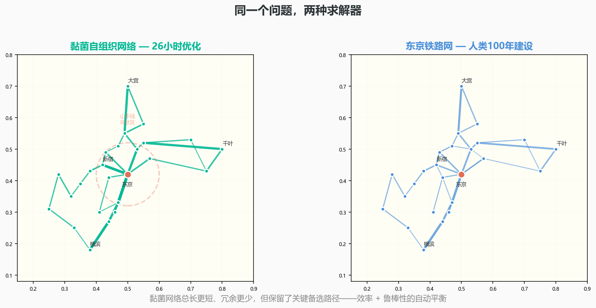

一个没有大脑的生物，如何画出了东京铁路网
你有没有见过黏菌？
一种黄黄的、黏糊糊的、像一大坨鼻涕一样趴在腐烂木头上的东西。它没有大脑，没有神经元，没有眼睛——它只是一个单细胞生物，但巨大到能看到。它的一生只做一件事：把身体铺成一张网，找到食物。
现在，想象你把一碗燕麦片放在东京市区，另一碗放在横滨，再一碗放在埼玉……按东京周边36个主要城市的位置，摆好36碗燕麦。然后把黏菌放在东京的中心。你什么都不做，就看着。
26小时后，你看到了什么？
黏菌的身体长成了一张网——一张和东京铁路系统惊人相似、在某些指标上甚至更优的网。这张网能高效运送养分，能在某段路坏了之后自动绕行，能用最少的材料连接最多的站。
人类工程师花了一百年才修出这个网络。黏菌花了26小时。
这不是童话。这是2010年发表在 Science 上的一项实验。而它背后藏着的数学——Steiner树——是一个困扰了数学家200年的问题。

在开始之前，先搞清三件事
第一，任何一个连接多个城市的交通网络，本质上是一个"最短网络"问题：怎样用最短的总里程把所有城市连起来？这个问题的答案叫"最小生成树"——小学数学就能理解。但如果允许你在中间添加新的连接点（比如高速公路的枢纽立交），问题就变成了"Steiner树问题"——它是NP-hard的。也就是说，随着城市数量增加，计算机也找不到最优解。
第二，黏菌没有计算器，没有拉格朗日乘子。但它用一种物理式的算法解决了问题：它先把身体铺满整个区域（探索所有可能），然后让"用得多"的管道变粗、加厚，"用得少"的管道萎缩、消失。这个"用进废退"的过程重复几十个循环之后，留下来的就是最优网络。
第三，黏菌的网络有一个人类铁路网没有的特征——它在效率和鲁棒性之间自动找到了平衡。最短的网络建造成本最低，但一旦某根树枝断了，整个系统就完蛋。黏菌的网络故意留了一些"冗余连接"——不是最短，但更安全。这个权衡，和互联网的路由设计、供应链的备选方案、电网的环网设计——用的是同一套数学。
2010年：燕麦片、光斑、和一篇Science封面论文
故事的主角是北海道大学的科学家中垣俊之（Toshiyuki Nakagaki）——一个黏菌狂人。他此前已经证明黏菌能在迷宫中找到最短路径（得了2008年的Ig Nobel奖）。但2010年这个实验，让所有人闭嘴了。
实验的做法精致得像在布置一个微缩模型：用一个扁平的培养皿，琼脂表面做成关东地区的地形。36颗燕麦片按东京周边36个实际车站的位置摆放——品川、新宿、横滨、大宫、千叶……最大的一颗放在东京中央。光照模拟自然障碍（黏菌讨厌光，会避开亮的地方）。
然后，他们把黏菌放在"东京"位置。关灯。等待。
起初，黏菌像一个炸开的烟花——向四面八方探出细丝。24小时后，细丝连接到每一个燕麦点。然后奇迹开始发生：有些细丝越来越粗（通流量大的主干道），有些越来越细、萎缩、消失（冗余或绕远的支线）。再过几个小时，整个网络稳定下来。
当他们把这张"黏菌最终路线图"和真实的东京铁路网叠在一起时——两者的拓扑结构高度重合。山手线的大环、放射状通向郊区的支线、横滨方向的密集连接……黏菌画出来的和人类花100年建出来的，几乎选择了相同的"主干道"。
更让人震惊的是：在某些指标上，黏菌的网络比人类铁路更好。它的总长度更短、绕路更少、且某段路故障后系统的"韧性"更强。一个没有大脑的生物，设计出了比专业交通工程师更优的方案。
2010年1月22日，论文发在 Science 上。标题很低调：Rules for Biologically Inspired Adaptive Network Design——翻译过来就是：《看黏菌如何连网，然后抄它的答案》。
黏菌的算法：没有大脑，怎么做优化？
黏菌的全部"算法"可以归纳为两条规则：
规则1：流量大的路，加宽。如果一条管道运送的养分多，它的直径就自动增大——不需要"决策"，纯粹是物理反馈：物质流动引起的压力触发了细胞骨架的组装。
规则2：流量小的路，萎缩消失。如果一条管道长时间没有养分通过，它就会逐渐收缩、断裂、被回收。黏菌不浪费任何资源在"没用"的路上。
这两条规则反复迭代，形成了一个自然选择式的优化闭环。不需要中央处理器，不需要全局地图——每一个局部的反馈加在一起，就产生了一个全局最优解。这正是分布式算法的精髓。
从黏菌到数学，再到你的生活
Steiner树问题不只是黏菌的事。它是网络设计的基本问题：集成电路的布线（如何在芯片上连接数百万个晶体管）、物流中心的选址、光纤网络的铺设——都是Steiner树问题的变体。
而黏菌给了我们一个启示：有些问题的答案，不是"算"出来的，而是"长"出来的。通过简单的局部规则反复迭代，系统能自发地涌现出全局最优结构——这种"涌现"机制，是自然界最优雅的算法。
你在一个烂木头上看到的"鼻涕虫"，在做一个人类用超级计算机才能逼近的数学问题。
下次你在公园的朽木上看到一坨黄色的黏菌时——停一停。你看到的不是一个"恶心"的东西。你看到的是一个无脑生物，正在运行这个宇宙中最优雅的优化算法。